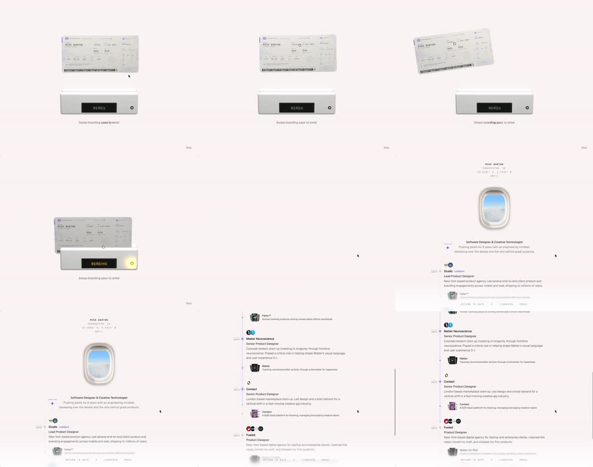

Portfolio entry gate: a boarding pass slides through a scanner slot (display flips READY -> READING with amber light), the pass tilts during the swipe, and on success the gate dissolves into the portfolio (airplane-window photo + experience timeline).
Media
Frame-by-frame

0-20%
Gate screen: boarding pass (MIKE BARTON, MAN -> SEA, seat/barcode) floating above a grey scanner device with a dot-matrix 'READY' display and round LED; 'Swipe boarding pass to enter'.
20-35%
Pass drags/animates down through the scanner slot, tilting ~8deg as it feeds; display flickers.
35-50%
Display switches to 'READING' in amber with the LED lit yellow; scan progress implied; pass completes the swipe.
50-70%
Success: gate elements part/fade; the portfolio's identity block resolves (name, Manchester NH, coordinates) with an airplane-window photo.
70-100%
Portfolio scrolls: bio, experience timeline entries (Studio, Fueled, Matter Neuroscience, Contact) with roles and descriptions, year markers along a vertical rail.
Build prompt
Rebuild this flow 1:1: a portfolio entry gate - screen 1 is a scanner ritual (boarding pass swipes through a slot, display flips READY -> READING, amber LED), screen 2 is the portfolio itself, revealed on success.
## Integration
Integration: stack-agnostic spec - every value is plain layout/typography/CSS; any motion is described as duration + curve that maps to any animation library.
## Screen 1 - Gate
Boarding pass (MIKE BARTON, MAN -> SEA, seat, barcode) floating above a grey scanner device with a dot-matrix "READY" display and a round LED. Hint: "Swipe boarding pass to enter".
## Screen 2 - Portfolio
Identity block (name, Manchester NH, coordinates) with an airplane-window photo; bio; experience timeline (Studio, Fueled, Matter Neuroscience, Contact) with year markers along a vertical rail. Normal scroll page.
## Transitions
- Swipe (~800ms, ease-in): pass translates down through the slot, tilting ~8deg as it feeds; display flickers.
- Reading (~1s): display switches to "READING" in amber dot-matrix, LED lights yellow; brief scan flicker.
- Confirm -> reveal (~600ms, ease-out): gate elements part/fade; the portfolio's identity block resolves with opacity + slight rise.
- Sequence is swipe -> read -> confirm -> reveal, never overlapping.
## Calibration
- The ~8deg tilt mid-swipe is the physicality cue - a straight pass looks like a dropdown.
- READING holds ~1s: long enough to read, short enough not to stall.
- Dot-matrix styling for the display text - a plain sans label kills the scanner realism.
## Reduced motion
Pass fades through the slot (300ms); gate crossfades to content (200ms); no tilt.
## Don't miss
- The LED changes state (dark -> amber) in sync with the display text.
- The portfolio should be composed behind the gate before the reveal, so the dissolve lands on something solid.
- The gate is one-shot; the portfolio is a normal scroll page after it.
Mechanics
trigger
drag/swipe the pass through the slot (or autoplay)